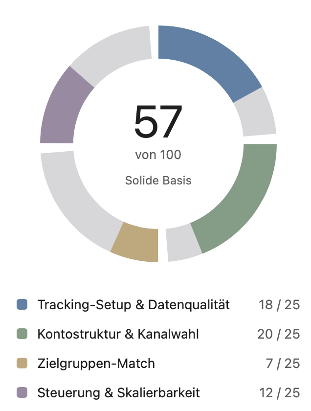

Account-Audit
kostenlosDer mögliche Einstieg: Deine Google-, Microsoft- und Meta-Konten werden anhand von vier Prüfbereichen analysiert – Tracking & Datenqualität, Kontostruktur & Kanalwahl, Zielgruppen-Match sowie Steuerung & Skalierbarkeit. Das Ergebnis ist ein klarer Score (0–100) inklusive einer Dokumentation mit den größten Hebeln – unabhängig davon, ob danach eine Zusammenarbeit entsteht.
Der Aufwand für dich: Nur ca. 10–15 Minuten für Zugang zu den Tools bzw. Screenshots. Du erhältst das Ergebnis innerhalb von 5 Werktagen, als PDF mit klaren Handlungsempfehlungen. Der Score zeigt dir auf einen Blick, in welchem Bereich dein größtes Potenzial liegt.
- Tracking & Datenqualität – GA-Ereignisse, Consent-Konfiguration und Datenintegrität
- Kontostruktur & Kanalwahl – Aufbau von Google Ads, Microsoft Ads und Meta Ads im Vergleich zum Geschäftsmodell
- Zielgruppen-Match – Passung von Zielgruppen-Setup und Angebot
- Steuerung & Skalierbarkeit – Gebotsstrategie, Budgetverteilung und Wachstumspotenzial

Jetzt kostenloses Account-Audit anfordern
In 10–15 Minuten Zugang geben oder Screenshots teilen – das Ergebnis erhältst du innerhalb von 5 Werktagen, ganz ohne Verpflichtung.